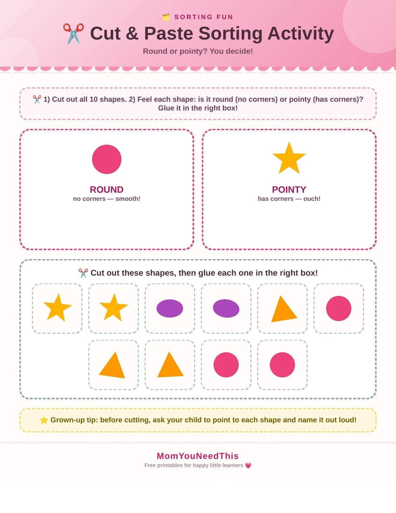

Cut & Paste Sorting Activities For Kids Snip, Sort & Stick Shapes
Snip, snip, sort! These activities add scissor practice to shape sorting. Cut out each shape, then paste it where it belongs. Hands-on learning at its best.
Quick Answer
These free cut and paste sorting activities combine scissor practice with shape sorting for double the learning. Toddlers and preschoolers cut out shapes, then paste each one into its correct group. Download and print at home with no signup needed. Cutting builds hand strength while sorting builds thinking skills — a perfect pair.
At a Glance
- Ages: Toddlers and preschoolers
- Activity: Cutting out shapes and pasting them into sorted groups
- Skills: Scissor skills and shape sorting
- Format: Printable worksheet (PDF)
- Cost: Free, no signup
✂️ Cut & Paste Sorting
Children cut out shapes along the bold lines, then paste each into its labeled group. The cutting is half the fun — and half the learning!

🖨️ Download Your Free Cut & Paste Sorting Printable
Scissors, glue, and shapes! Print and craft — no signup needed.
⬇️ Download Free Printable 🖨️ Print(opens in new tab)🎁 Free printable for toddlers & preschoolers
Step by Step: Print, Cut, Sort, Paste
- Print the page. Grab child-safe scissors and a glue stick.
- Cut along the bold lines. Snip out each shape — grown-ups can pre-cut for beginners.
- Name each shape. As each shape comes free, say its name together before it joins a pile.
- Sort into piles. Group the shapes by kind before any glue comes out.
- Paste each shape into its group. Glue every shape into its labelled group on the page.
- Count each group. Finish by counting how many shapes landed in each group.
🔍 Scissor Practice Tips
Use child-safe scissors and start with straight cuts. Hold the paper with the helper hand and let the cutting hand do the work. Snip slowly!
💡 Why Cut AND Sort?
Cutting builds the hand strength and coordination writing requires, while sorting builds thinking. Combining them means one activity develops motor skills and cognitive skills simultaneously — efficient, joyful learning.
More Ways to Sort the Same Page
The learning does not end with the first sort. Before the glue comes out — or with a second printed copy — sort the same cut-out shapes a different way: by colour instead of shape, or line them up from smallest to biggest.
While you sort, talk it through like a game: 'Which group does this one belong in? How do you know?' Explaining the choice out loud is where the thinking happens — and it turns one printable into three activities.
📚 Keep Exploring Shapes
Discover more free shape activities, printables, and learning ideas created for busy parents.
🎁 Back to Shape Sort Activities